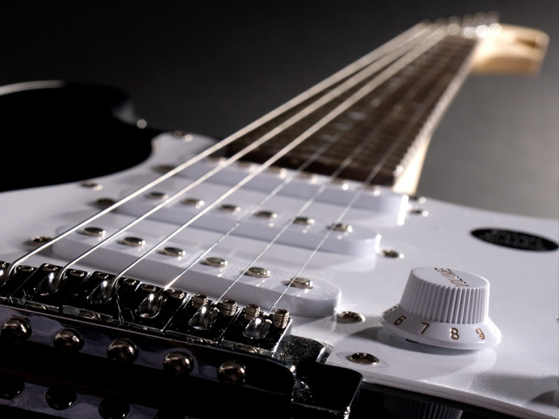
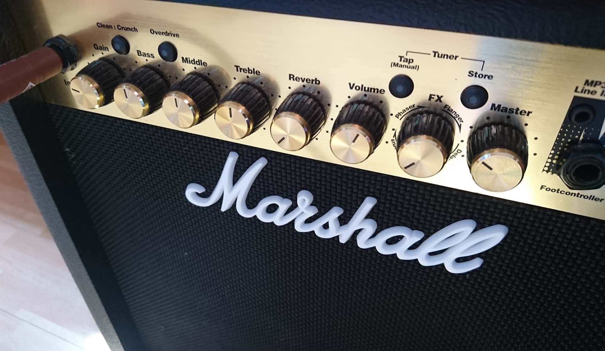
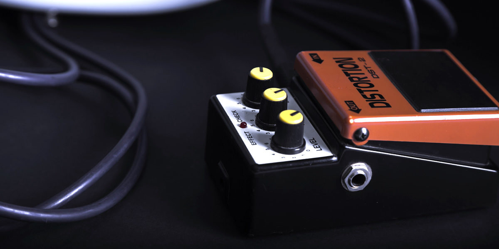
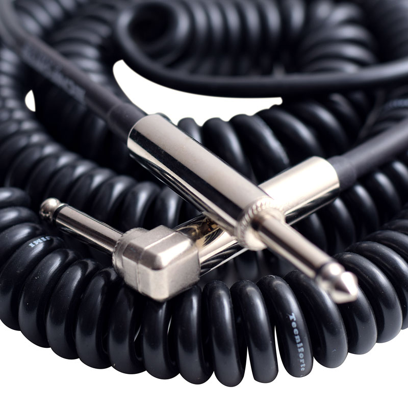

Em meio a inúmeras opções no mercado, escolher qual guitarra comprar pode ser uma tarefa complicada.
E pode ser uma escolha ainda mais confusa caso seja a primeira vez que você se depara com tantas variedades e
de guitarras. Veterano ou iniciante, é essencial a todos guitarristas conhecerem bem aspectos das
que facilitarão a escolha no momento da compra. Nesse post falaremos sobre alguns fatores e diferenças
entre os modelos mais comuns de guitarra no mercado, para que você possa escolher com segurança seu instrumento.
Por: Geison Vieira
Leia mais

Há muitos fatores a serem considerados ao comprar o seu primeiro amplificador
de guitarra e você precisa ter certeza de que está fazendo um bom investimento.
Vejamos alguns dos recursos que você precisa observar para escolher o melhor amplificador para iniciantes.
Por: Geison Vieira
Leia mais

Os pedais de guitarra são essenciais para os músicos que buscam um som único e
personalizado. Eles são capazes de alterar o timbre da guitarra, adicionando efeitos que vão desde
um leve chorus até uma distorção pesada. Por isso, é importante escolher os melhores pedais de guitarra
para atender às suas necessidades musicais.
Por: Geison Vieira
Leia mais

Ao escolher um cabo de guitarra,
é importante procurar um cabo com um condutor de no mínimo 0.30mm². Quanto mais espesso for o condutor,
mais limpo e rápido o som passará por ele. Também é recomendável que o
cabo possua uma maior quantidade de fios entrelaçados, para garantir maior durabilidade e resistência.
Por: Geison Vieira
Leia mais